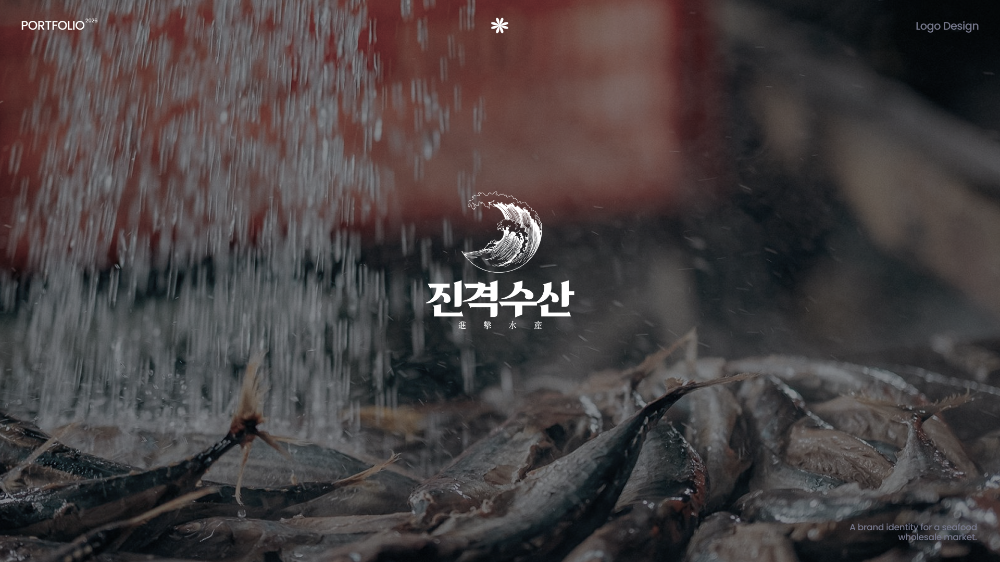
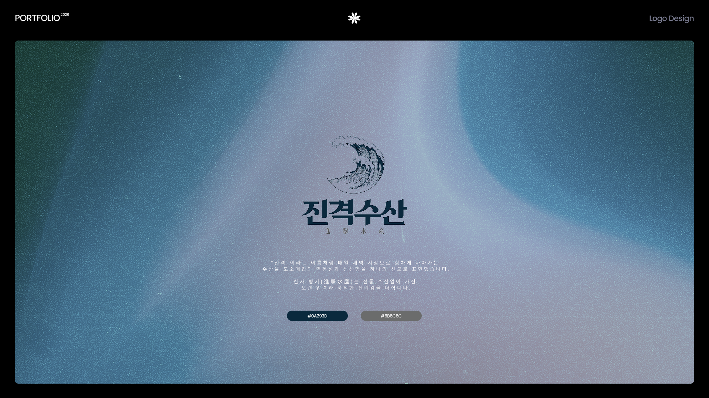
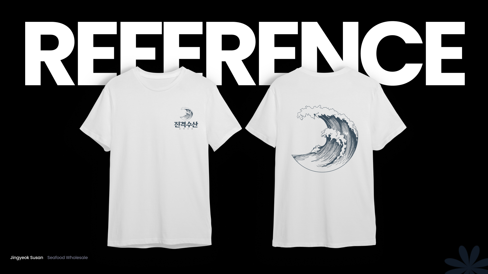
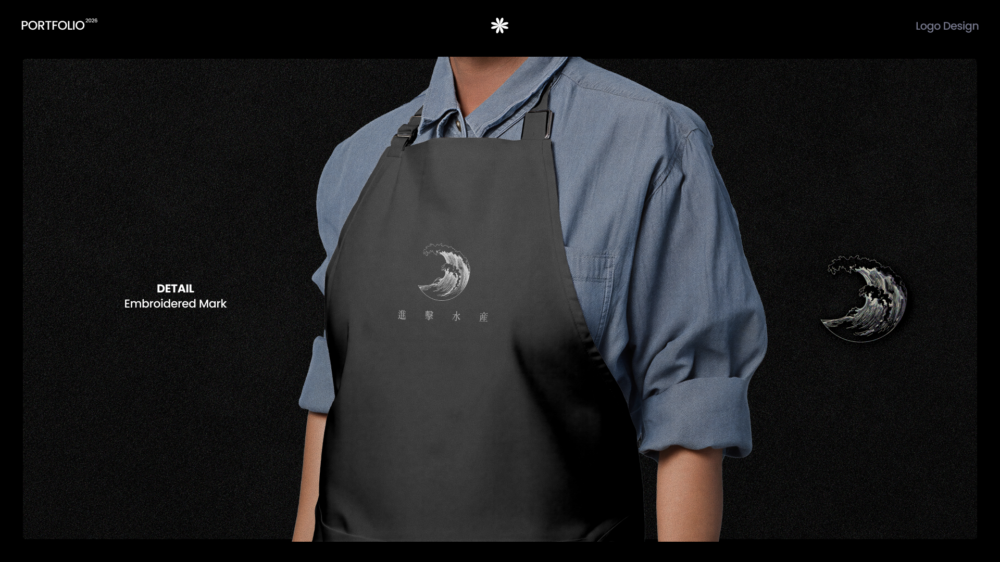
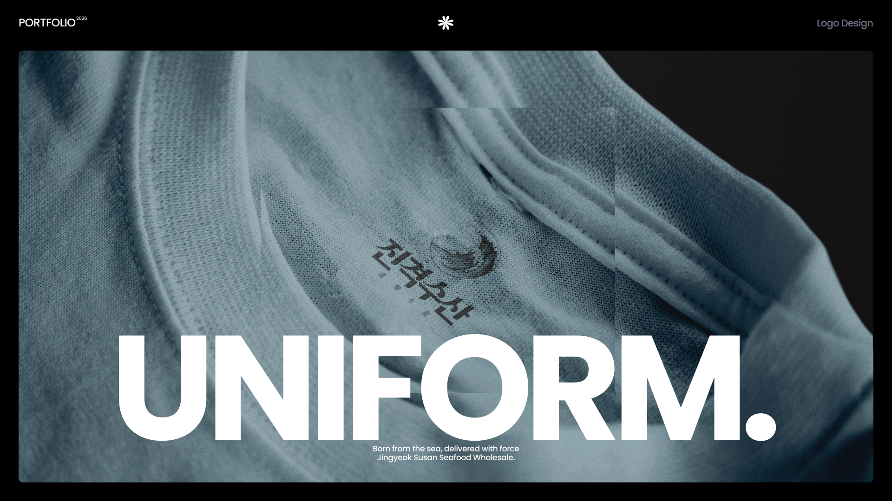
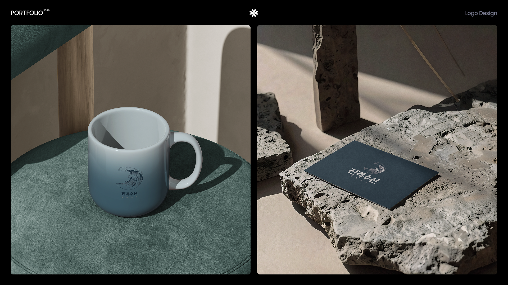
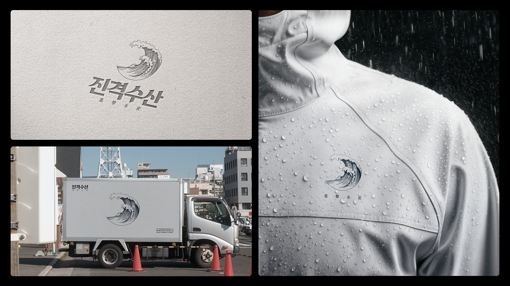

진격수산 로고







Design
'진격수산'은 수산물 도소매를 전문으로 하는 브랜드입니다. 이름에 담긴 힘 있는 어감을 어떻게 하나의 이미지로 압축할지 고민하다가, 거세게 밀려오는 파도의 순간을 로고의 중심에 두게 됐습니다.
매일 새벽, 가장 신선한 상태로 시장에 도착하는 수산물처럼 브랜드 역시 멈춰있지 않고 계속 나아가는 느낌을 담고 싶었습니다.
Information
Role
Brand Identity Design
Tool
Adobe Illustrator
Adobe Photoshop
Figma
Contribution
100% (Personal Project)
Design
수산물 도소매 시장을 검색해보면 로고들이 대부분 비슷했습니다. 파란색 계열에 물고기나 배 일러스트를 넣은, 어디서 본 듯한 이미지들이었죠.
전통 있는 업종이라 신뢰감은 있어 보였지만, 동시에 '오래됐다'는 인상도 함께 따라왔습니다. 이 둘을 동시에 잡을 수 있는 지점이 필요했습니다.
Design
Wave · Momentum · Freshness
"진격"이라는 이름을 처음 들었을 때 떠오른 이미지는 잔잔한 바다가 아니라 방금 부서지기 시작한 파도였습니다. 그래서 정적인 심볼 대신 움직임이 살아있는 곡선으로 파도를 그렸습니다.
한자를 함께 넣은 이유는 단순한 장식이 아니라, 오래 자리를 지켜온 수산업 특유의 무게감을 로고에도 실어주고 싶었기 때문입니다. 색은 화려함을 걷어내고 짙은 네이비 하나로 정리했습니다. 어디에 찍혀도 브랜드 톤이 흔들리지 않도록요.